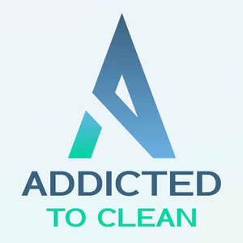

Trade Mark Journal No.2026/006 6 February 2026
UK00004326988 20 January 2026 (35,37)

- Class 35
- Providing consumer information relating to goods and services; Management assistance services.
- Class 37
- Cleaning services; Provision of cleaning services; Housekeeping services [cleaning services]; Providing information relating to street cleaning services; Providing information relating to window cleaning services; Janitorial cleaning services; Providing information relating to storage tank cleaning services; Emptying [cleaning] services; Upholstery cleaning services; Domestic cleaning services; Valeting services relating to office cleaning; Valeting services relating to household cleaning; Restroom cleaning services; Office cleaning services; Industrial cleaning services; Valeting services relating to industrial cleaning; Providing information relating to floor polishing services; Boiler cleaning services; Ceiling cleaning services; Escalator cleaning services; Tube cleaning services; Providing information relating to building cleaning; Provision of laundry services; Janitorial services; Cleaning by means of scouring (Services for -); Providing information relating to the rental of floor cleaning machines; Cleaning by means of sanding (Services for -); Providing information relating to laundering services; Providing information relating to the cleaning of building exteriors; Range hood cleaning services; Laundry services; Providing information relating to the cleaning of carpets and rugs; Cleaning by water jetting (Services for -); Disinfection services; Building maintenance and repair services provided by a handyman; Polishing (cleaning); Carpet cleaning; Cleaning of upholstery; Dry cleaning; Cleaning (Dry -); Cleaning of furniture; Cleaning of clothes; Clearing and cleaning gutters; Cleaning of drains; Polishing [cleaning] of vehicles; Cleaning of furnishings; Building cleaning; Domestic cleaning; Cleaning of blinds; Cleaning of clothing; Clothing (Cleaning of -); Cleaning of machines; Textile cleaning; Car cleaning; Cleaning of mats; Waste removal [cleaning]; Cleaning of windows; Cleaning of textiles; Cleaning of offices; Cleaning of shoes; Cleaning of fabrics; Window cleaning; Maintenance of cleaning machines; Cleaning of gullies; Automobile cleaning; Cleaning of footwear; Cleaning of leather; Cleaning of property; Cleaning of factories; Street cleaning; Cleaning of shops; Cleaning of buildings; Cleaning of schools; Cleaning of automobiles; Cleaning of streets; Cleaning of hospitals; Vehicle cleaning; Cleaning of vehicles; Loft cleaning; Cleaning of structures; Hygienic cleaning [vehicles]; Cleaning of facades; Cleaning of hotels; Facade cleaning; Hygienic cleaning [buildings]; Cleaning of domestic utensils; Leather cleaning and repair; Mechanical cleaning of waterways; Cleaning of monuments.
Carl Morgan